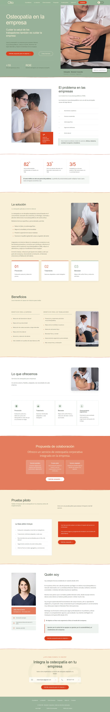
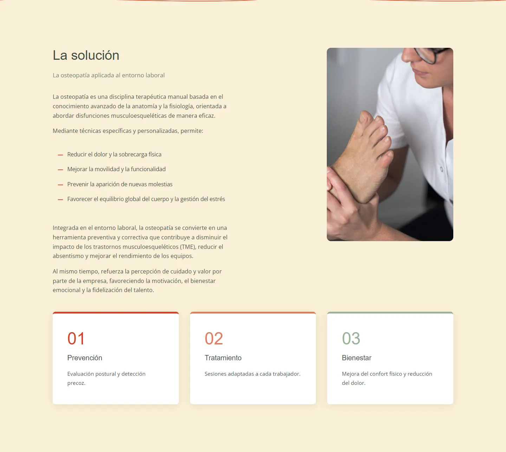
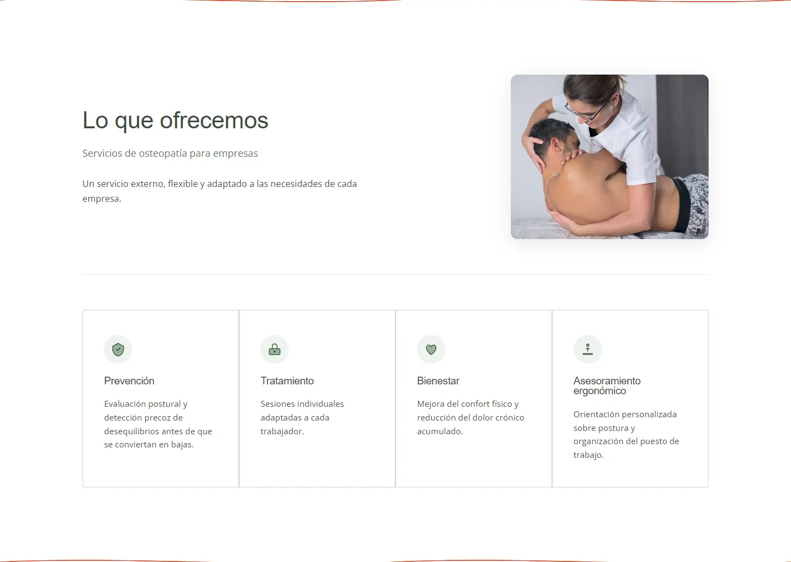
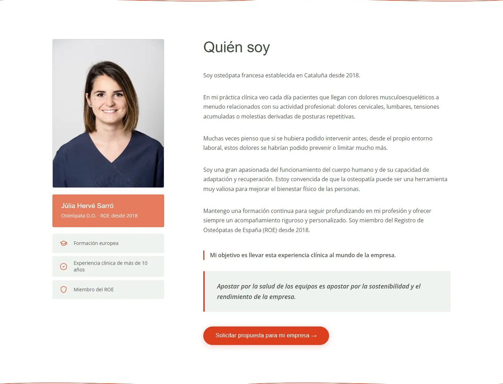
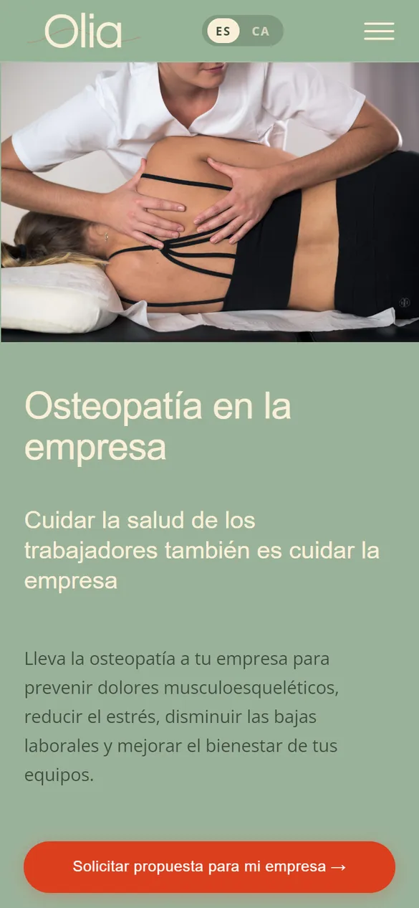
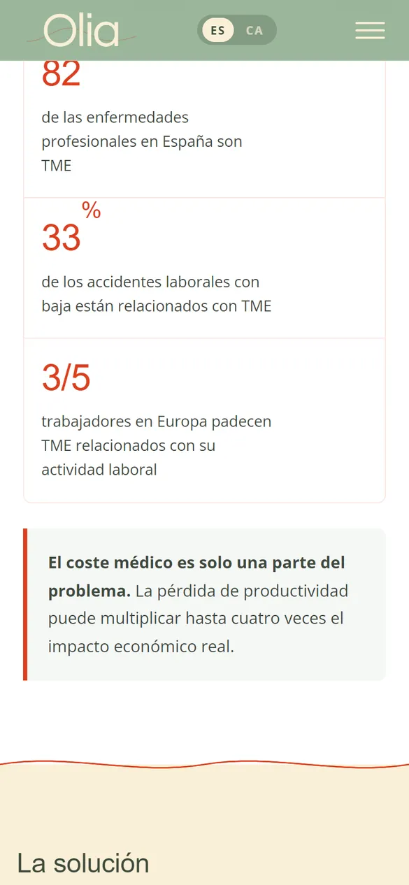
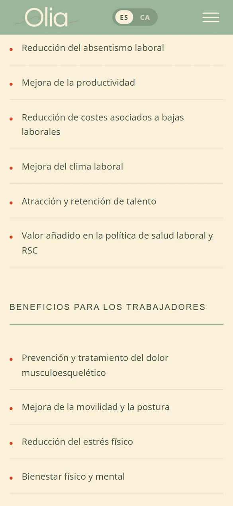
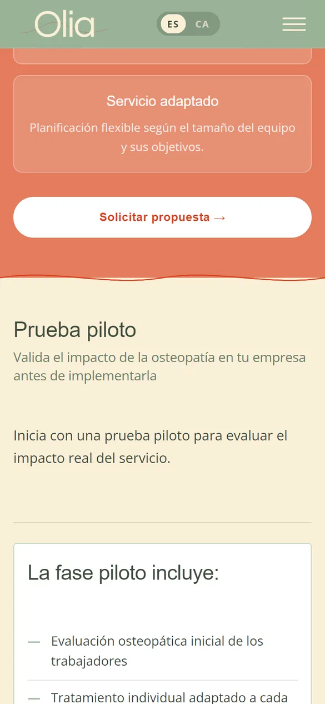

Caso 04 · Salud y bienestar
Olia Workplace
Osteopatía en la empresa. Un servicio nuevo, con marca nueva, que tenía que convencer a empresas desde el primer día: profesionalidad clínica, tono cercano y un camino claro hasta pedir propuesta.

- 2idiomas: castellano y catalán
- +10años de experiencia clínica a la vista
- 1formulario pensado para empresas
01 — El reto
Vender a empresas
un servicio nuevo.
Olia es osteópata con más de diez años de experiencia clínica y decidió llevar su trabajo a las empresas: sesiones en la propia oficina para el equipo.
Servicio nuevo, marca nueva y sin clientes. La web tenía que vender la idea a empresas, con un recorrido de compra muy distinto al de un paciente, transmitir profesionalidad clínica y captar contactos de calidad desde el primer día.
Recorrido
La web,
de arriba abajo.
- 01Osteopatía en la empresa, en una frase.
- 02El problema y qué es la osteopatía laboral.
- 03Beneficios y cómo funciona el servicio.
- 04Prueba piloto, quién soy y la propuesta.

02 — La solución
Seis decisiones
para convencer a una empresa.
-
01
Marca B2B con tono cálido
Confianza clínica y cercanía humana a la vez: salvia y crema para hablar de bienestar sin estridencias.
-
02
Un argumento por pasos
Problema, solución, beneficios y proceso, en el orden en que una empresa toma la decisión.
-
03
Bilingüe castellano y catalán
Toda la web en los dos idiomas, con un selector siempre a mano.
-
04
Propuesta para empresas
Un formulario con lo que importa (equipo, ubicación, frecuencia) para llegar a la primera llamada con contexto.
-
05
Prueba piloto
Una forma de empezar con poco riesgo, explicada con claridad para quien tiene que aprobarla.
-
06
Credenciales visibles
Registro de osteópatas, años de experiencia y quién hay detrás, desde el primer scroll.

03 — El diseño
Bienestar
sin estridencias.
QuestrialTitulares: suaves y cercanos
Open SansTexto: claro y profesional
- Salvia
#9AB29A - Crema
#FAF0D7 - Coral
#E37C5C - Rojo acción
#DB3F1F - Verde tinta
#3D4A3D
Salvia y crema para la calma de un tratamiento, coral para las secciones que invitan a dar el paso y un rojo decidido para cada botón. La tipografía redondeada suaviza el mensaje clínico sin restarle seriedad.


04 — En el móvil
Pensada para
convencer en el móvil.





¿Te imaginas la tuya?
¿Vas a lanzar un servicio nuevo?
Cuéntame qué necesitas y te propongo el camino más corto para conseguirlo. Presupuesto cerrado en 24 horas.